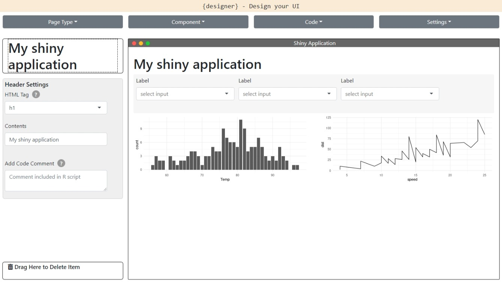

designer is intended to make the initial generation of a UI wireframe of a shiny application as quick and simple as possible.
The package contains a shiny application that enables the user to build the UI of a shiny application by drag and dropping several shiny components - such as inputs, outputs and buttons - into one of the available pages in the shiny package. Once finalised, the R code used to generate the UI can be copied or downloaded to a ui.R file, and then the rest of the application like the server logic and styling can be built by the developer.
The drag-and-drop nature of the application means that it is easy for both R and non-R users to collaborate in designing the UI of their shiny application. Comments can be added to any component so that it is simple to remember what should be included for each input/output.
Installation
Install from CRAN with:
install.packages("designer")Or install the development version from GitHub with:
devtools::install_github("ashbaldry/designer")The application is also available on-line through shinyapps.io.
Usage
To open the designer application and create your own UI, run the following code:
designer::designApp()Alternatively, you can launch the addin via the RStudio menu.

Once opened, create the application as required until you are happy with the layout of the application, then copy the code to the relevant R file

# ui.R
bootstrapPage(
title = "Shiny Application",
theme = bslib::bs_theme(4),
h1(
"My shiny application"
),
inputPanel(
selectInput(
inputId = "dropdown_gxc2o1ekgb",
label = "Label",
choices = "..."
),
selectInput(
inputId = "dropdown_azset57v65",
label = "Label",
choices = "..."
),
selectInput(
inputId = "dropdown_itgcle8yze",
label = "Label",
choices = "..."
)
),
fluidRow(
column(
width = 6,
# Bar plot
plotOutput(
outputId = "plot_zvu8c9upbu",
height = "200px"
)
),
column(
width = 6,
# Line chart
plotOutput(
outputId = "plot_qsmfr0lp57",
height = "200px"
)
)
)
)Docker demo
Optionally, you can also build a Dockerized version of the app:
sudo docker build -t designer -f Dockerfile .After building the docker image (which should take a while) use the command:
docker run -p 80:80 designerDepending on your Docker setup, the exposed application may be available under: http://localhost:80